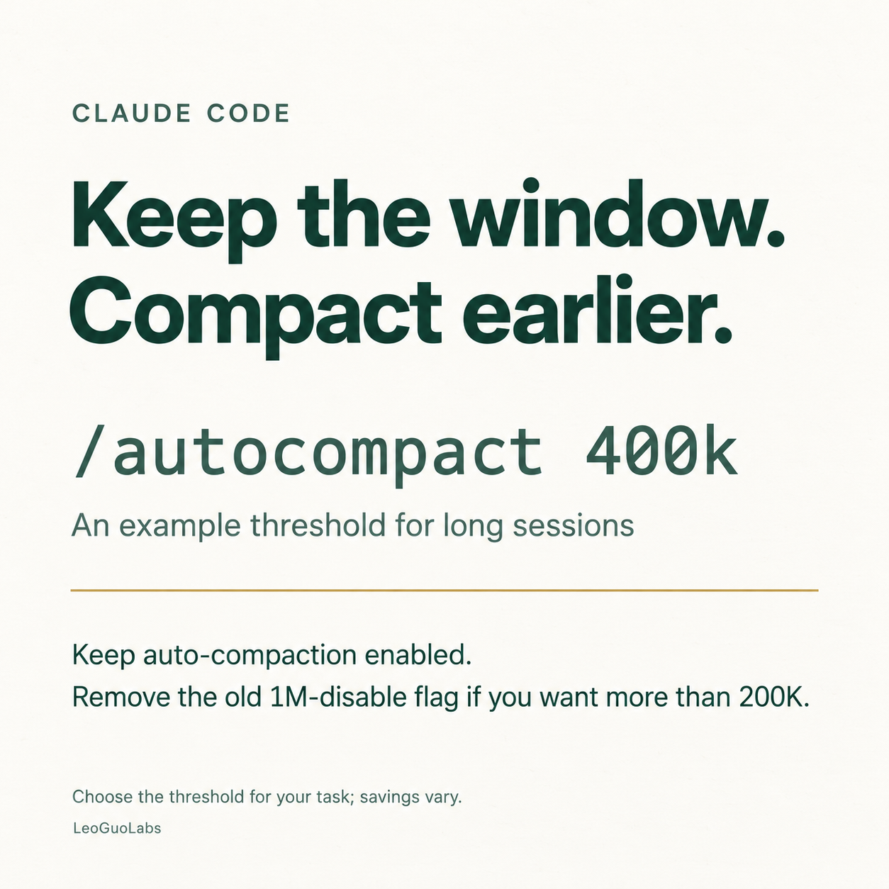

Claude Code tip for long sessions: keep the 1M window available, but try compacting earlier. /autocompact 400k Keep auto-compaction enabled. If you previously added CLAUDE_CODE_DISABLE_1M_CONTEXT=1 to ~/.claude/settings.json, remove it to use a window above 200K. 400K is a starting point to try, not a universal sweet spot. Savings depend on your workload and caching; compaction also summarizes earlier detail. https://code.claude.com/docs/en/model-config#context-window-and-auto-compaction
